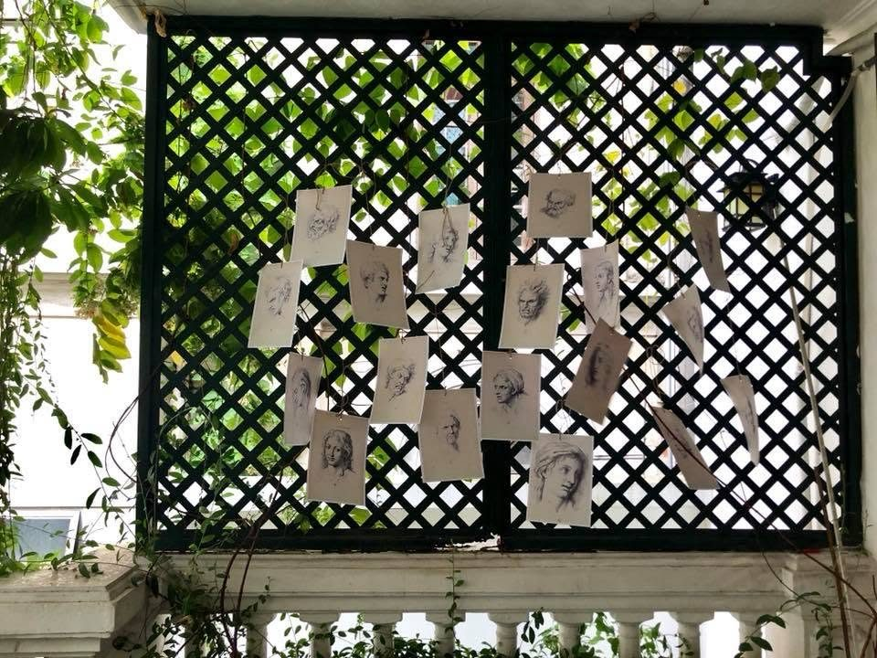
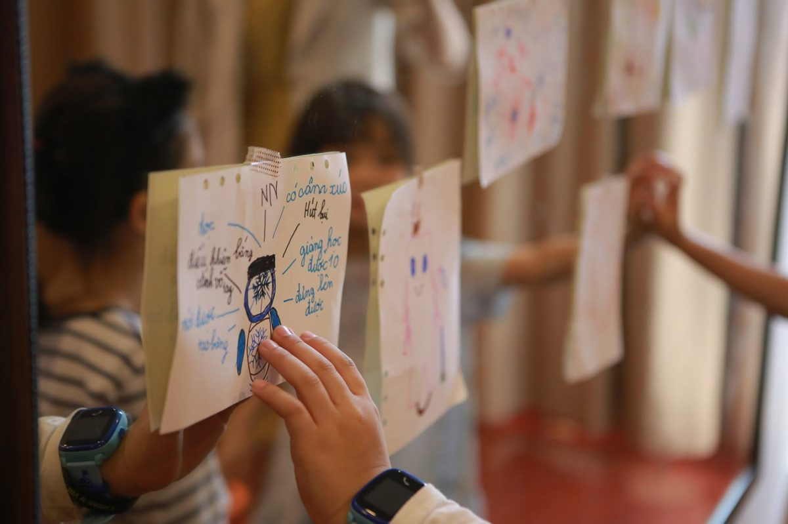

Programs I have designed, led or curated for children and the adults who care for them. Each starts from the same belief: children shape their own childhood, and families need support too.
Program · Mostly 2019 – 2020 · Kindergarten to 10th grade
The Classroom in the Tree
I designed three Philosophy for Children programs and, with a team of teachers, brought them to more than 100 children across Vietnam.
My role
Program designer and facilitator
Children
Kindergarten to 10th grade, more than 100 in total
Where and when
Across Vietnam, mostly in 2019 and 2020, plus four online sessions during the pandemic
Approach
Philosophy for Children (P4C) framework with a socio-cultural approach to curriculum design
The aim was to strengthen children’s critical, creative and collaborative thinking. I also ran workshops and shared resources so teachers could weave P4C into their own teaching, in school and in out-of-school settings.
Philosophy for ChildrenCurriculum designTeacher workshopsOnline sessions

Children’s drawings from the program.

Children sharing their work.
Bookstore and learning space · 2025 – now
RURI Books
A children’s bookstore and learning space I co-founded, where storytime, craft and family talks live side by side.
My role
Co-founder and program director. I work remotely as a consultant and coordinate team members and experts.
Who it serves
Children from birth to age 10 and the adults who care for them
What happens there
Bilingual storytimes with crafts, parent talks, book launches for children’s authors and a picture-book reading series
RURI Books rests on a simple belief: children are independent people who guide and shape their own childhood, and parents deserve care and support as they grow into their role too.